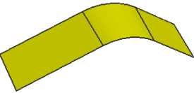
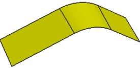

打开部件并开始偏置
-
打开 ffm4_offset_surface_step。
这个部件中包含一个通过拉伸相切连续草图而得的曲面。

您现在将创建一个偏置曲面，右侧两个面的距离为向上20毫米，左侧的一个面为0。
-
点击特征工具条上的偏置曲面
 。
。
打开 ffm4_offset_surface_step。
这个部件中包含一个通过拉伸相切连续草图而得的曲面。

您现在将创建一个偏置曲面，右侧两个面的距离为向上20毫米，左侧的一个面为0。
点击特征工具条上的偏置曲面  。
。